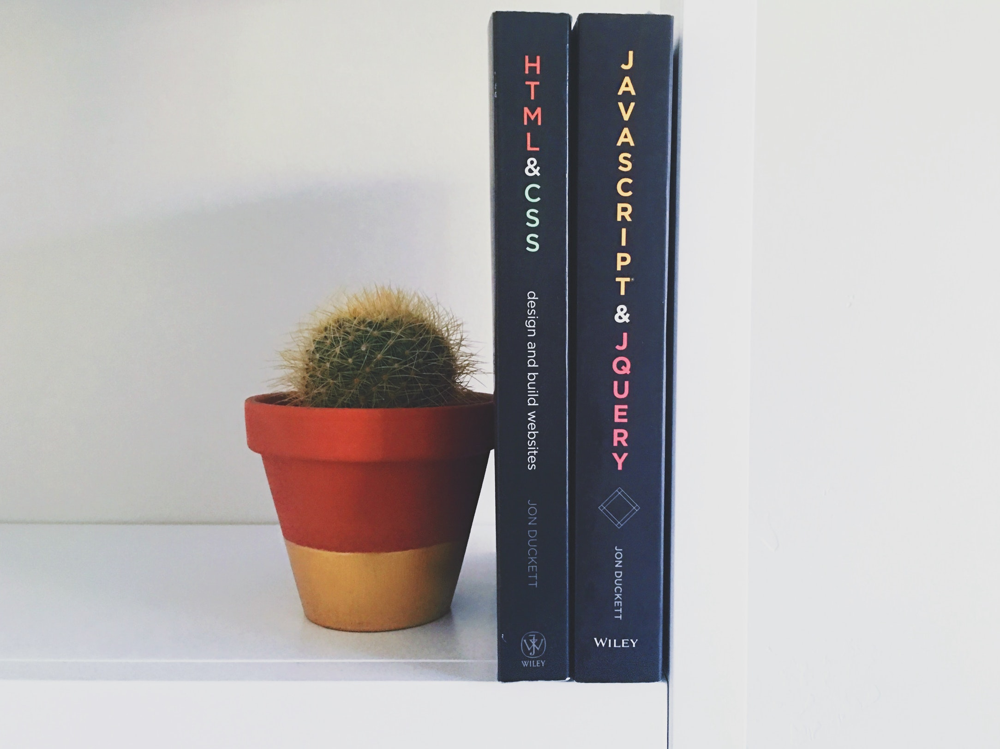

What I've been up to
March 7, 2018
I'm currently reading HTML & CSS by Jon Duckett which is good book for beginners like me. It doesn't look as intimidating as other manuals and the visuals are quite nice. I like that he explains like I'm five and mentions best practices. For example <'br /> should be used instead of <'br>, little things like that. Overall I think this book will set a good foundation for my learning and I'll checkout his Javascript & Jquery book next. I bought this a while back but never touched it because I didn't have a reason to learn web design. Now that I've been helping my parents with their business website I'm trying to find ways to optimize their site. I've been getting in to marketing of a small business, which I hope to apply to my future business. I've been having fun experimenting and its forced me to learn a lot on my own including:
- HTML/CSS
- GitHub
- Google analytics tracking
- Mailchimp & how to setup an email campaign
- Customer service (responding to customer's emails)
- Social media marketing - IG, FB, Yelp, Google Business

It's been fun and I hope I can help their business grow, after relocating my parents lost about half of their customers. So I'm thinking of ways to get new ones in! Goals and action items for me:
- Integrate credit/debit transactions
- Take over bookkeeping in Excel (no more notebooks)
- Understand business taxes and find what they're not writing off and should be
- Setup online bookings
- Setup an online store?
- Setup POS register and train staff how to use it, preferably on an iPad
- Advertise at the nearby Church & High School
- New customer promos 10% off (just need to get them in first)
- Sell their overstock items from moving shops
I like that my parents are game about trying anything (or with some convincing). I think I'll learn a lot about running a business. Who knows maybe I can take over after they retire. I'm not sure it's something I want to do since I'm more interested in starting my matcha idea. Oh yeah! I was thinking of doing Matcha Mondays at their shop. I'll make matcha lattes and give them to customers complimentary. I think it's a fun happy hour idea and I can get feedback and see if it's fesiable.
I love matcha lattes and realized they're super easy to make. I was inspired when I went to a cafe and bought overpriced $5 of matcha that tasted terrible. My realization was if they could sell their yuck matcha, so could I except mine would taste great and be more affordable. Profit margins for cafe drinks in general are pretty high. For example a cup of coffee costs maybe $0.15 to make yet people are lining up at starbucks for $3 a cup! Yes there's labor, overhead costs, etc. but I'm sure it's still quite profitable. I just need to do more research. I've been making it for my coworkers and they seem to really enjoy it, even the non-matcha drinkers.
Matcha Cookies
March 6, 2018
Hello I need to figure out the structure of this blog. I'll keep ya posted. Omg it's 1:00 AM. Why am I still up tinkering with this?
Still awake. Was it those matcha cookies I ate?! So delicious. Ah, this template has bootstrap no wonder.
Speaking of matcha, today I baked matcha cookies. They turned out super bitter but oh wells I still ate em anyways.